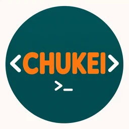
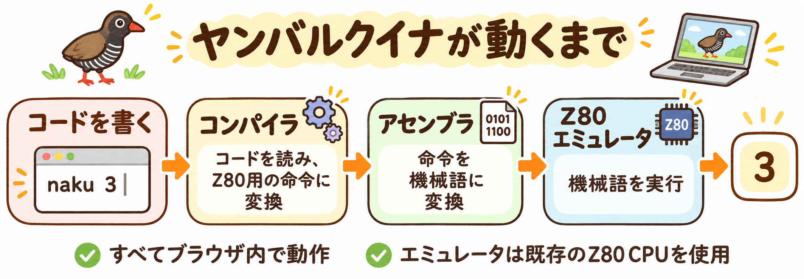
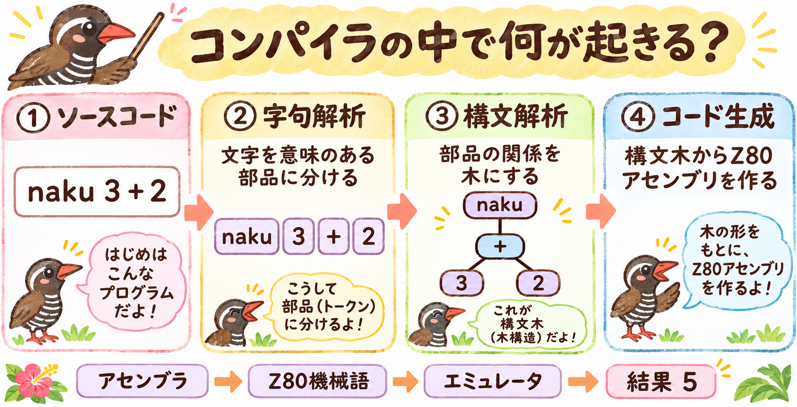

QUEENA PLAYGROUND ブラウザ内で実行Queena・CHUKEI Playground
1 コードを書く
main.🐧3 結果を見る
待機中実行で表示。
しくみを見る 開いて確認
01 トークン
実行で表示。
02 構文木
実行で表示。
03 生成コード Z80アセンブリ
実行で表示。
実行で表示。
04 実行ステップ
CHUKEIのみ対応。
使い方・仕様
naku：出力 ／ moshi：分岐 ／ aruku：ループ ／ zz：コメント
Zig/WASM → Z80アセンブリ → 機械語 → 既存Z80エミュレータ。CP/Mはコンソール出力のみ。
C：+1 ／ CH：−1 ／ CHU：右へ ／ CHUK：出力 ／ CHUKE・CHUKEI：ループ
空白で区切る6命令。256セル、値0〜255、値・ポインタは循環。現在セルが0ならループ終了。入力・コメントなし。
JavaScript製コンパイラ → 教材用VM（Z80ではありません）。JZ：0なら移動、JNZ：0以外なら移動。
ASCII：65=A、90=Z、97=a、122=z、10=改行、32=空白。0〜127のみ。自動改行・日本語なし。
すべてブラウザ内で処理。コードは送信しません。トークン・構文木は実際の解析結果です。Queenaの列位置はUTF-8バイト単位。
文法・実装コード
Queena · EBNF
program = { statement } ;
statement = identifier, "=", expression
| "naku", "(", expression, ")"
| "moshi", "(", expression, ")", block,
{ "mata", "(", expression, ")", block }, [ "hoka", block ]
| "aruku", "(", expression, ")", block
| "tobu" | "hashiru" ;
block = "{", { statement }, "}" ;
expression = comparison, { "==", comparison } ;
comparison = sum, [ ("<" | ">"), sum ] ;
sum = product, { ("+" | "-"), product } ;
product = primary, { ("*" | "/"), primary } ;
primary = integer | identifier | "(", expression, ")" ;
integer = digit, { digit } ;
identifier = letter, { letter | digit } ;
letter = "A"…"Z" | "a"…"z" | "_" ;
digit = "0"…"9" ;
トークン単位の文法。identifierは予約語を除く。整数は0〜65535。空白・改行を読み飛ばし、// と予約語 zz は行末までコメント。
優先順位：括弧 → * / → + − → < > → ==。反復演算は左結合。tobu・hashiruはループ内のみ。1<2<3、単項 −、文字列、;、<=、>=、!=、% は未対応。
比較式 → 構文木
fn comparison(self: *Self) ParseError!*Node {
var left = try self.term();
// 比較演算は1回のみ許可（連鎖比較は非許可）
if (self.match(.less) or self.match(.greater)) {
const operator = self.previous;
const right = try self.term();
left = self.tree.createNode(
.binary,
.{ .binary = .{ .left = left, .operator = operator, .right = right } },
null,
) catch return ParseError.OutOfMemory;
}
return left;
}
左右の式をBinaryノードにする実コード。比較の連鎖はifで制限。
Zig/WASMで解析・Z80アセンブリ生成 → アセンブル → 既存Z80エミュレータ。naku(1+2*3) → 7。
CHUKEI · EBNF
program = { statement } ;
statement = "C" | "CH" | "CHU" | "CHUK" | loop ;
loop = "CHUKE", { statement }, "CHUKEI" ;
空白で分割したトークン単位。大文字・空白区切り、コメントなし。空プログラム可。ループは現在セルが0以外の間、最大128段。値とポインタは循環。
ループ → VM命令
for(let i=0;i<result.tokens.length;i++) {
const t=result.tokens[i];
const at=`line ${t.line}, column ${t.column}`;
if(t.kind==='invalid') throw Error(`Unknown command at ${at}: ${t.lexeme}`);
const pc=code.length;
code.push({pc,op:t.kind,sourceIndex:i});
if(t.kind==='JZ') {
if(stack.length>=128) throw Error(`Loop nesting exceeds 128 levels at ${at}`);
const node={label:'CHUKE … CHUKEI · Loop while current cell ≠ 0',children:[]};
children.push(node);stack.push({pc,parent:children,token:t});children=node.children;
} else if(t.kind==='JNZ') {
if(!stack.length) throw Error(`Unmatched CHUKEI at ${at}`);
const open=stack.pop();code[open.pc].arg=pc+1;code[pc].arg=open.pc+1;children=open.parent;
} else children.push({label:`${t.lexeme} · ${t.kind}`,children:[]});
}
if(stack.length){const t=stack.at(-1).token;throw Error(`Unmatched CHUKE at line ${t.line}, column ${t.column}`);}
スタックで開始と終了を対応付け、JZはループ後、JNZは本体先頭へ。ASTと命令列を同時に作る。
JavaScript製の教材用VM。Z80ではありません。C C C CHUKE CHUK CH CHUKEI → 3・2・1。ASCIIは0〜127、自動改行なし。
EBNF：{ } 繰り返し ／ [ ] 省略可能 ／ | 選択 ／ , 連結
図で見る
イラストで見る、コードから実行まで
画像をタップすると原寸で開けます。
入力するときは括弧を付けてください。 図の表記は説明用です。実際のコードは naku(3)、naku(3 + 2) です。

